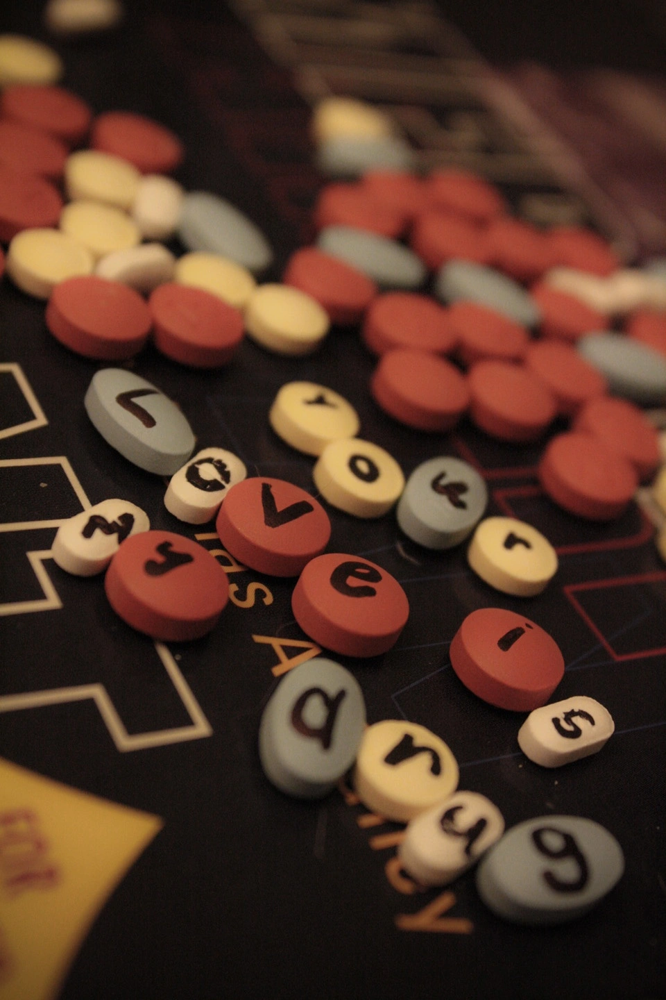
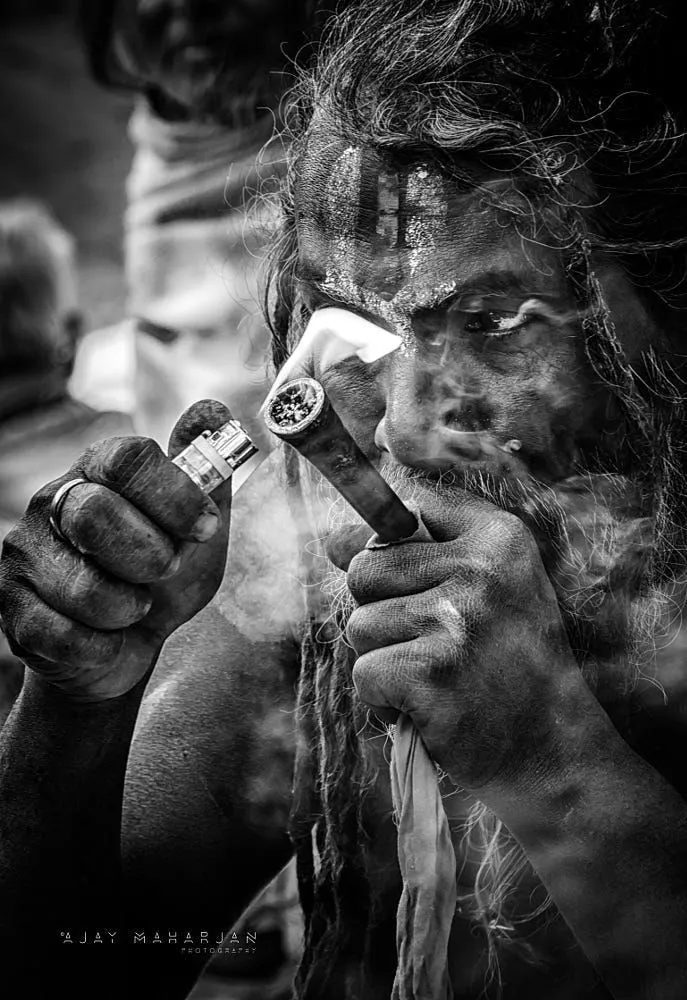
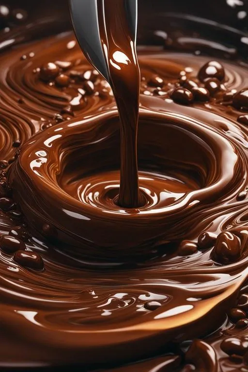
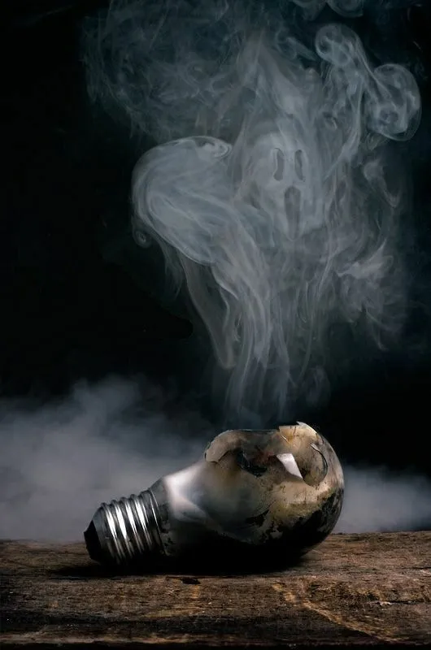
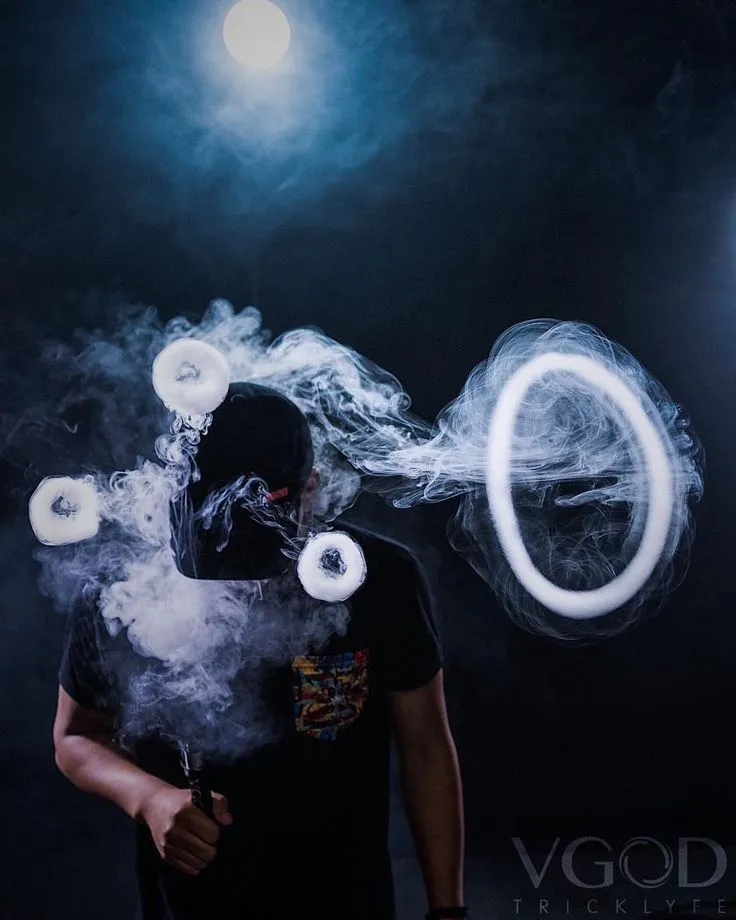
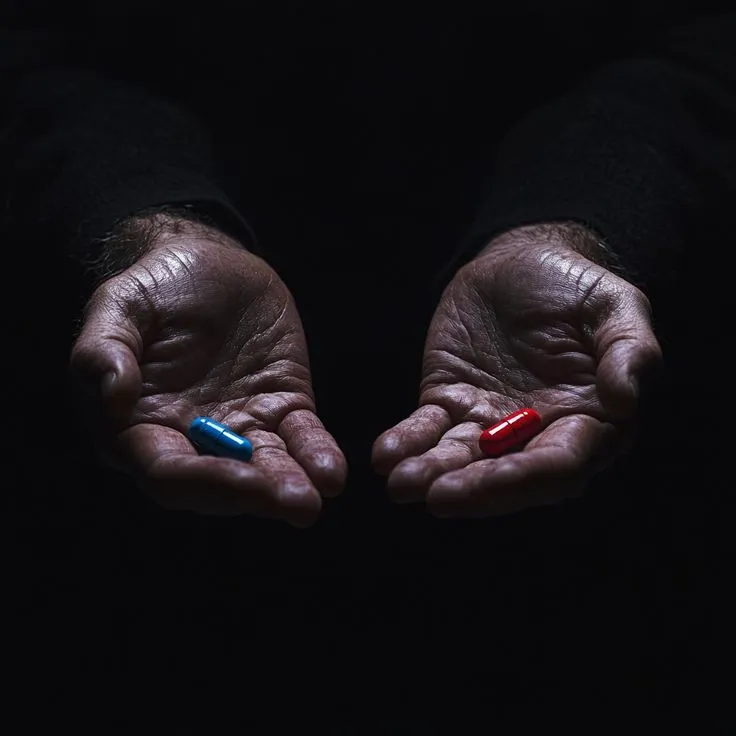
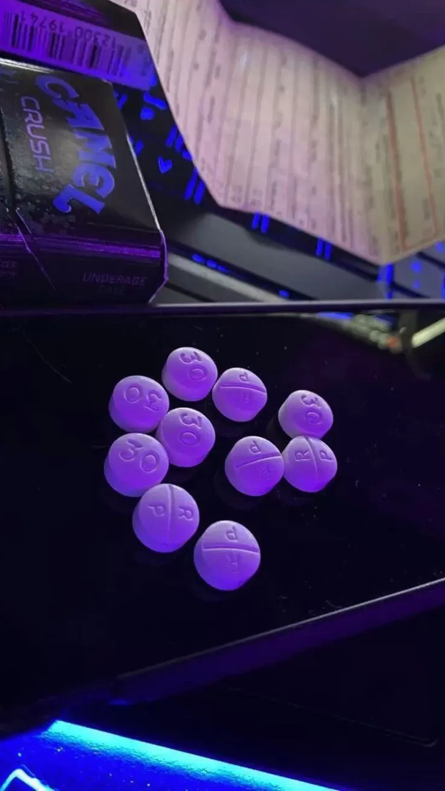
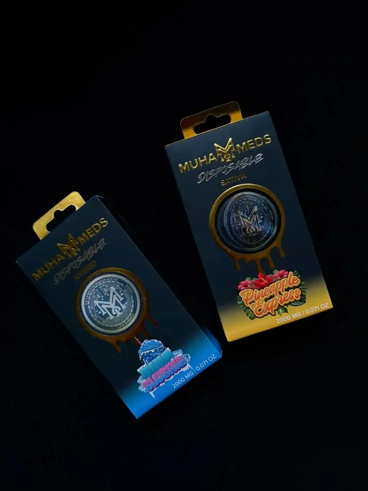
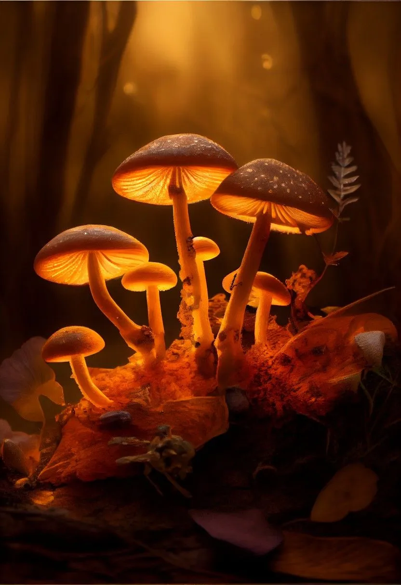

Minimalism, mystery and quiet reflections.

CURATED ARCHIVES • STORIES • DISCOVERIES
A curated archive of stories, discoveries, rare finds, cultural references, and unique collections gathered within THE KITCHEN ecosystem.
Collections represent carefully curated archives of ideas, experiences, cultural references, and unique discoveries. Each collection captures a different perspective, moment, or theme within the broader THE KITCHEN network.









The modern world produces more information than any individual can process. Collections help organize knowledge, preserve valuable discoveries, and create meaningful connections between ideas that might otherwise remain hidden.
THE KITCHEN uses collections to capture experiences, opportunities, cultural references, and stories that deserve long-term preservation.